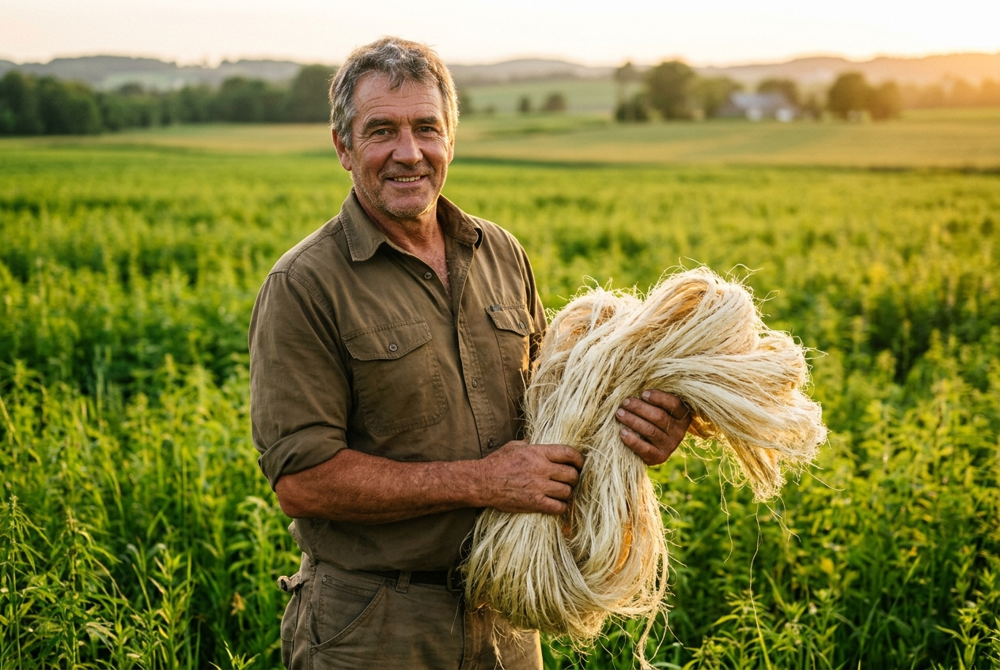

List Harvest Residue
Farmers upload photos, weight in kg, moisture condition, grade, farm coordinates, and availability date.
AgroConnect connects rural farmers and agricultural cooperatives directly with textile mills, bio-packaging plants, and pulp manufacturers—powered by smart supplier matching and live logistics.

Verified Rural Suppliers · Direct Farm-Gate Pricing Raw Biomass Supply
Raw Biomass Supply
Farmers upload photos, weight in kg, moisture condition, grade, farm coordinates, and availability date.
Buyers filter by landed cost, compare multiple sellers side-by-side, or split large tonnage across nearby suppliers.
Google Maps distance calculation estimates exact pickup truck tiers, transport cost, and arrival time.
Real-time order tracking from farm pickup to factory gate—turning waste into textiles, paper, and composites.
Every ton of banana stem, lotus stem, sugarcane bagasse, and coconut husk sourced through AgroConnect prevents open-field burning, adds secondary income for rural growers, and lowers raw material costs for green manufacturers.